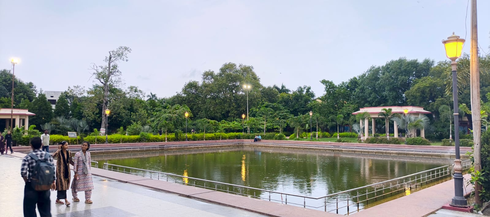
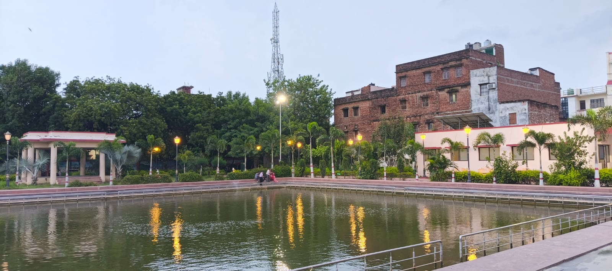
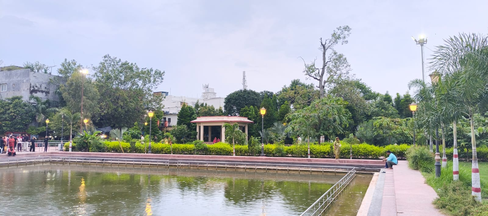
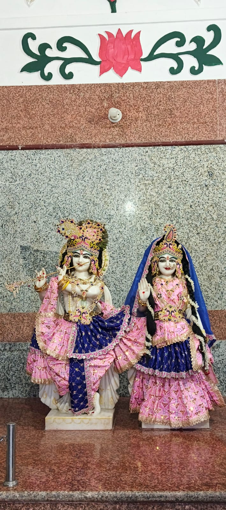
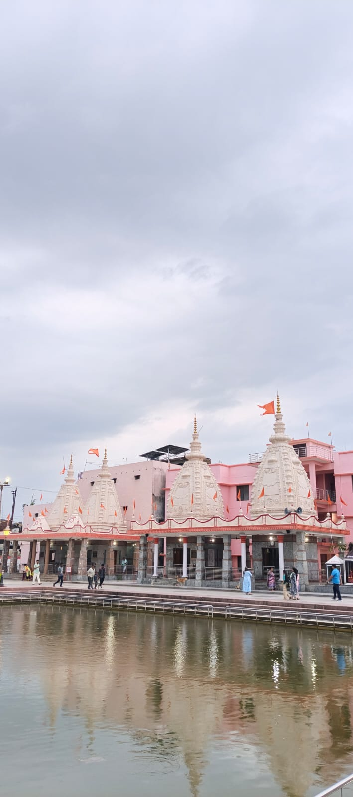

Mansarovar Mandir at a Glance
About Prachin Mansarovar Mandir
Prachin Mansarovar Temple is one of the historic Shiva temples of Gorakhpur, Uttar Pradesh. The temple is traditionally delived to be several centuries old and is an important place of worship for devotees of Lord Shiva.
The temple complex has a peaceful and spritual atmosphere and includes shrines dedicated to Lord Shiva and other Hindu deities. A sacred pond, or kund, is also associated with the temple complex.
Mansarovar Temple has a special religious connection with the Gorakshpeeth. According to local tradition, the Vijayadashami procession associated with Gorakhpur temple reaches Mansarovar Temple, where religious rituals are performed.
An Ancient Temple Tradition
Prachin Mansarovar Mandir is an old Shiva temple located in the Adhiyari bagh/ Rasoolpur area of Gorakhpur. Local accounts describe the temple as being around 300 years old and associated its construcation with Raja Man Singh of Unwal. This historical attributes is based on local accounts rather a detailed archaeological record.
The temple has a close traditional connection with Gorakhnath Temple and the Gorakshpeeth. According to local tradition, the Gorakshpeeth's Vijayadashami procession begins at Gorakhnath temple and concludes at Mansarovar Temple, where worship is performed.
The temple complex includes shrines dedicated to Shiva, Ram-janaki, Radha-Krishna and Goddess Durga, along with other religious figures and a small sacred pond (kund).
Festival & Religious Occasions
Maha Shivratri is an important occasion at the Shiva temple and attracts devotees for worship and prayers.
Other Hindu festivals may also be observed throughout the temple complex.
Places to Explore
Shiva Temple
The main Shiva shrine is one of the important spiritual attractions of the Mansarovar temple complex.
Other Shrines
The complex also includes shrines associated with Durga, Ram Darbar and Radha-Krishna.
Green Surroundings
Trees, plants and garden areas provide a peaceful environment around the temple complex.
Mansarovar Kund
A small sacred water body is located within the temple complex.
Plan Your Visit
Current public listings describe the temple as open throughout the day. However, temple schedules may change during festivals, special ceremonies or other occasions.
Opening information is based on current third-party listings and may not represent an official fixed temple schedule. Confirm timings locally before travelling.
How to Reach Mansarovar Mandir
Find Mansarovar Mandir
Prachin Mansarovar Mandir, Rasoolpur, Aditya Naga, Rajendra Nagar, Gorakhpur, Uttar Pradesh 273015.
Open Google Maps ↗️Tips for Visitors
- Dress comfortably and respectfully while visiting the temple.
- Maintain cleanliness around the temple and kund.
- Follow the instructions of temple authorities and devotees.
- Maha Shivratri can be a particularly busy period.
- Check current timings before visiting, especially during festivals.
Explore Mansarovar Mandir




